Chapter 32: Plant Reproduction¶
Introduction¶
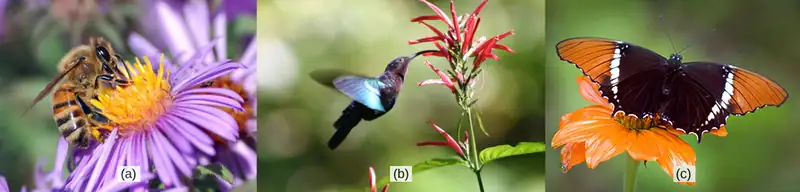
Plants have evolved different reproductive strategies for the continuation of their species. Some plants reproduce sexually, and others asexually, in contrast to animal species, which rely almost exclusively on sexual reproduction. Plant sexual reproduction usually depends on pollinating agents, while asexual reproduction is independent of these agents. Flowers are often the showiest or most strongly scented part of plants. With their bright colors, fragrances, and interesting shapes and sizes, flowers attract insects, birds, and animals to serve their pollination needs. Other plants pollinate via wind or water; still others self-pollinate.
32.1 Reproductive Development and Structure¶
Learning Objectives
By the end of this section, you will be able to do the following:
- Describe the two stages of a plant’s lifecycle
- Compare and contrast male and female gametophytes and explain how they form in angiosperms
- Describe the reproductive structures of a plant
- Describe the components of a complete flower
- Describe the development of microsporangium and megasporangium in gymnosperms
Sexual reproduction takes place with slight variations in different groups of plants. Plants have two distinct stages in their lifecycle: the gametophyte stage and the sporophyte stage. The haploid gametophyte produces the male and female gametes by mitosis in distinct multicellular structures. Fusion of the male and females gametes forms the diploid zygote, which develops into the sporophyte. After reaching maturity, the diploid sporophyte produces spores by meiosis, which in turn divide by mitosis to produce the haploid gametophyte. The new gametophyte produces gametes, and the cycle continues. This is the alternation of generations, and is typical of plant reproduction (Figure 32.2).
![Illustration shows the life cycle of angiosperms, which includes a microgametophyte stage and a megagametophyte stage. The life cycle begins with the fusion of egg and sperm to form a zygote. The zygote undergoes mitosis, resulting in a male microsporophyte or a female megasporophyte. The microsporophyte has a cluster of cells called a microsporangium, and the megasporophyte has a cluster of cells called a megasporangium. Through meiosis, the microsporangium forms microspores, and the megasporangium forms megaspores. Both microspores and megaspores undergo mitosis, forming the microgametophyte and megagametophyte, respectively. Within the microgametophyte, the fusion of egg and sperm completes the cycle.](img/figure-37-01-01.webp)
The life cycle of higher plants is dominated by the sporophyte stage, with the gametophyte borne on the sporophyte. In ferns, the gametophyte is free-living and very distinct in structure from the diploid sporophyte. In bryophytes, such as mosses, the haploid gametophyte is more developed than the sporophyte.
During the vegetative phase of growth, plants increase in size and produce a shoot system and a root system. As they enter the reproductive phase, some of the branches start to bear flowers. Many flowers are borne singly, whereas some are borne in clusters. The flower is borne on a stalk known as a receptacle. Flower shape, color, and size are unique to each species, and are often used by taxonomists to classify plants.
Sexual Reproduction in Angiosperms¶
The lifecycle of angiosperms follows the alternation of generations explained previously. The haploid gametophyte alternates with the diploid sporophyte during the sexual reproduction process of angiosperms. Flowers contain the plant’s reproductive structures.
Flower Structure¶
A typical flower has four main parts—or whorls—known as the calyx, corolla, androecium, and gynoecium (Figure 32.3). The outermost whorl of the flower has green, leafy structures known as sepals. The sepals, collectively called the calyx, help to protect the unopened bud. The second whorl is comprised of petals—usually, brightly colored—collectively called the corolla. The number of sepals and petals varies depending on whether the plant is a monocot or dicot. In monocots, petals usually number three or multiples of three; in dicots, the number of petals is four or five, or multiples of four and five. Together, the calyx and corolla are known as the perianth. The third whorl contains the male reproductive structures and is known as the androecium. The androecium has stamens with anthers that contain the microsporangia. The innermost group of structures in the flower is the gynoecium, or the female reproductive component(s). The carpel is the individual unit of the gynoecium and has a stigma, style, and ovary. A flower may have one or multiple carpels.
Visual Connection
![Illustration shows parts of a flower, which is called the perianth. The corolla is composed of petals, and the calyx is composed of sepals. At the center of the perianth is a vase-like structure called the carpel. A flower may have one or more carpels, but the example shown has only one. The narrow neck of the carpel, called the style, widens into a flat stigma at the top. The ovary is the wide part of the carpel. Ovules, or megasporangia, are clusters of pods in the middle of the ovary. The androecium is composed of stamens which cluster around the carpel. The stamen consists a long, stalk-like filament with an anther at the end. The anther shown is tri-lobed. Each lobe, called a microsporangium, is filled with pollen.](img/figure-32-01-02.webp)
If the anther is missing, what type of reproductive structure will the flower be unable to produce? What term is used to describe an incomplete flower lacking the androecium? What term describes an incomplete flower lacking a gynoecium?
If all four whorls (the calyx, corolla, androecium, and gynoecium) are present, the flower is described as complete. If any of the four parts is missing, the flower is known as incomplete. Flowers that contain both an androecium and a gynoecium are called perfect, androgynous or hermaphrodites. There are two types of incomplete flowers: staminate flowers contain only an androecium, and carpellate flowers have only a gynoecium (Figure 32.4).
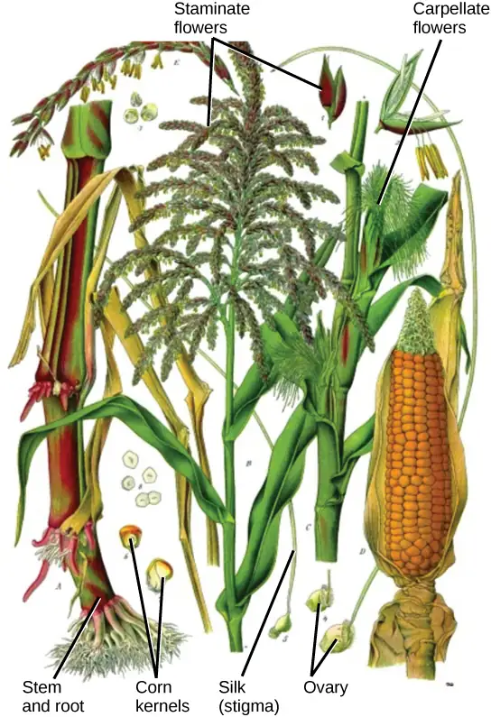
If both male and female flowers are borne on the same plant, the species is called monoecious (meaning “one home”): examples are corn and pea. Species with male and female flowers borne on separate plants are termed dioecious, or “two homes,” examples of which are C. papaya and Cannabis. The ovary, which may contain one or multiple ovules, may be placed above other flower parts, which is referred to as superior; or, it may be placed below the other flower parts, referred to as inferior (Figure 32.5).
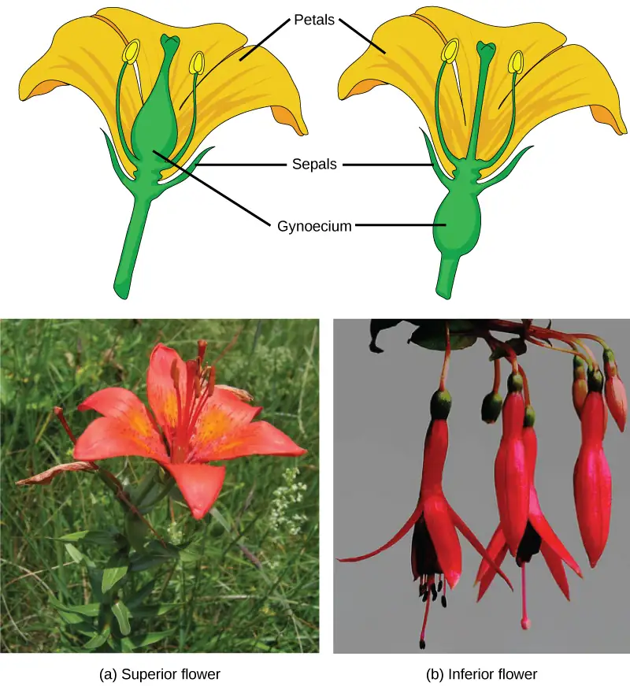
Male Gametophyte (The Pollen Grain)¶
The male gametophyte develops and reaches maturity in an immature anther. In a plant’s male reproductive organs, development of pollen takes place in a structure known as the microsporangium (Figure 32.6). The microsporangia, which are usually bilobed, are pollen sacs in which the microspores develop into pollen grains. These are found in the anther, which is at the end of the stamen—the long filament that supports the anther.
![Illustration A shows cross section of an anther, which has four lobes each containing a pollen sac, or microsporangium. Inside the pollen sac is a layer called the tapetum, and within this ring are the microspore mother cells. As the microsporangium matures, two pollen sacs merge and an opening forms between them so that the pollen can be released. Micrographs in part B show pollen sacs with a visible opening between them. b: A micrograph of an immature lily anther shows four pollen sacs containing pollen grains.](img/figure-37-01-02.webp)
Within the microsporangium, each of the microspore mother cells divides by meiosis to give rise to four microspores, each of which will ultimately form a pollen grain (Figure 32.7). An inner layer of cells, known as the tapetum, provides nutrition to the developing microspores and contributes key components to the pollen wall. Mature pollen grains contain two cells: a generative cell and a pollen tube cell. The generative cell is contained within the larger pollen tube cell. Upon germination, the tube cell forms the pollen tube through which the generative cell migrates to enter the ovary. During its transit inside the pollen tube, the generative cell divides to form two male gametes (sperm cells). Upon maturity, the microsporangia burst, releasing the pollen grains from the anther.
![Illustration shows the formation of pollen from a microspore mother cell. The mother cell undergoes meiosis to form a tetrad of cells, which separate to form the pollen grains. The pollen grains undergo mitosis without cytokinesis, resulting in four mature pollen grains with two nuclei each. One is called the generative nucleus, and the other is called the pollen tube nucleus. Two projective layers form around the mature pollen grain, the inner intine and the outer exine. Micrograph shows a pollen grain, which looks like puffed wheat.](img/figure-32-01-06f.webp)
Each pollen grain has two coverings: the exine (thicker, outer layer) and the intine (Figure 32.7). The exine contains sporopollenin, a complex waterproofing substance supplied by the tapetal cells. Sporopollenin allows the pollen to survive under unfavorable conditions and to be carried by wind, water, or biological agents without undergoing damage.
Female Gametophyte (The Embryo Sac)¶
While the details may vary between species, the development of the female gametophyte occurs in a two-phase process called megasporogenesis. In the first phase, a single cell in the diploid megasporangium—an area of tissue in the ovules—undergoes meiosis to produce four megaspores, only one of which survives. During the second phase, megagametogenesis, the surviving haploid megaspore undergoes mitosis to produce an eight-nucleate, seven-cell female gametophyte, also known as the megagametophyte or embryo sac. Two of the nuclei—the polar nuclei—move to the equator and fuse, forming a single, diploid central cell. This central cell later fuses with a sperm to form the triploid endosperm. Three nuclei position themselves on the end of the embryo sac opposite the micropyle and develop into the antipodal cells, which later degenerate. The nucleus closest to the micropyle becomes the female gamete, or egg cell, and the two adjacent nuclei develop into synergid cells (Figure 32.8). The synergids help guide the pollen tube for successful fertilization, after which they disintegrate. Once fertilization is complete, the resulting diploid zygote develops into the embryo, and the fertilized ovule forms the other tissues of the seed.
A double-layered integument protects the megasporangium and, later, the embryo sac. The integument will develop into the seed coat after fertilization and protect the entire seed. The ovule wall will become part of the fruit. The integuments, while protecting the megasporangium, do not enclose it completely, but leave an opening called the micropyle. The micropyle allows the pollen tube to enter the female gametophyte for fertilization.
Visual Connection
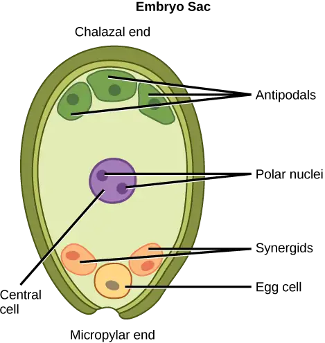
An embryo sac is missing the synergids. What specific impact would you expect this to have on fertilization?
- The pollen tube will be unable to form.
- The pollen tube will form but will not be guided toward the egg.
- Fertilization will not occur because the synergid is the egg.
- Fertilization will occur but the embryo will not be able to grow.
Sexual Reproduction in Gymnosperms¶
As with angiosperms, the lifecycle of a gymnosperm is also characterized by alternation of generations. In conifers such as pines, the green leafy part of the plant is the sporophyte, and the cones contain the male and female gametophytes (Figure 32.9). The female cones are larger than the male cones and are positioned towards the top of the tree; the small, male cones are located in the lower region of the tree. Because the pollen is shed and blown by the wind, this arrangement makes it difficult for a gymnosperm to self-pollinate.
![The conifer life cycle begins with a mature tree, which is called a sporophyte and is diploid, 2 n. The tree produces male cones in the lower branches, and female cones in the upper branches. The male cones produce pollen grains that contain two generative, sperm, nuclei and a tube nucleus. When the pollen lands on a female scale, a pollen tube grows toward the female gametophyte, which consists of an ovule containing the megaspore. Upon fertilization, a diploid zygote forms. The resulting seeds are dispersed, and grow into a mature tree, ending the cycle. Both the male and female cone are made up of rows of scales, but the female cone is round and wide, and the male cone is long and thin with thinner scales.](img/figure-32-01-08.webp)
Male Gametophyte¶
A male cone has a central axis on which bracts, a type of modified leaf, are attached. The bracts are known as microsporophylls (Figure 32.10) and are the sites where microspores will develop. The microspores develop inside the microsporangium. Within the microsporangium, cells known as microsporocytes divide by meiosis to produce four haploid microspores. Further mitosis of the microspore produces two nuclei: the generative nucleus, and the tube nucleus. Upon maturity, the male gametophyte (pollen) is released from the male cones and is carried by the wind to land on the female cone.
Interactive
Watch this video to see a cedar releasing its pollen in the wind. pollen_release
Female Gametophyte¶
The female cone also has a central axis on which bracts known as megasporophylls (Figure 32.10) are present. In the female cone, megaspore mother cells are present in the megasporangium. The megaspore mother cell divides by meiosis to produce four haploid megaspores. One of the megaspores divides to form the multicellular female gametophyte, while the others divide to form the rest of the structure. The female gametophyte is contained within a structure called the archegonium.
![Part a shows a cross section of a male cone, which is oval with a flattened bottom. A stem-like structure runs up the middle, and oblong microsporophylls radiate from either side. Migrograph b shows a microsphorphyll, which is filled with round pollen grains. Micrograph C shows a pollen grain, which is oval with two lobes attached. Part D shows a cross section of a female cone, which is similar in shape to the male cone but with a wider central structure. Megasporophylls radiate from either side of this structure. At the base the megasprophylls are narrow, and the widen out into a roughly diamond shape. Part E shows the megasprophyll, which has an oval ovule at its base. Part F shows the ovule. The megaspore mother cell is at the center. An opening called a micropyle allows entry of the pollen tube from the base.](img/figure-37-01-10.webp)
Reproductive Process¶
Upon landing on the female cone, the tube cell of the pollen forms the pollen tube, through which the generative cell migrates towards the female gametophyte through the micropyle. It takes approximately one year for the pollen tube to grow and migrate towards the female gametophyte. The male gametophyte containing the generative cell splits into two sperm nuclei, one of which fuses with the egg, while the other degenerates. After fertilization of the egg, the diploid zygote is formed, which divides by mitosis to form the embryo. The scales of the cones are closed during development of the seed. The seed is covered by a seed coat, which is derived from the female sporophyte. Seed development takes another one to two years. Once the seed is ready to be dispersed, the bracts of the female cones open to allow the dispersal of seed; no fruit formation takes place because gymnosperm seeds have no covering.
Angiosperms versus Gymnosperms¶
Gymnosperm reproduction differs from that of angiosperms in several ways (Figure 32.11). In angiosperms, the female gametophyte exists in an enclosed structure—the ovule—which is within the ovary; in gymnosperms, the female gametophyte is present on exposed bracts of the female cone. Double fertilization is a key event in the lifecycle of angiosperms, but is completely absent in gymnosperms. The male and female gametophyte structures are present on separate male and female cones in gymnosperms, whereas in angiosperms, they are a part of the flower. Lastly, wind plays an important role in pollination in gymnosperms because pollen is blown by the wind to land on the female cones. Although many angiosperms are also wind-pollinated, animal pollination is more common.
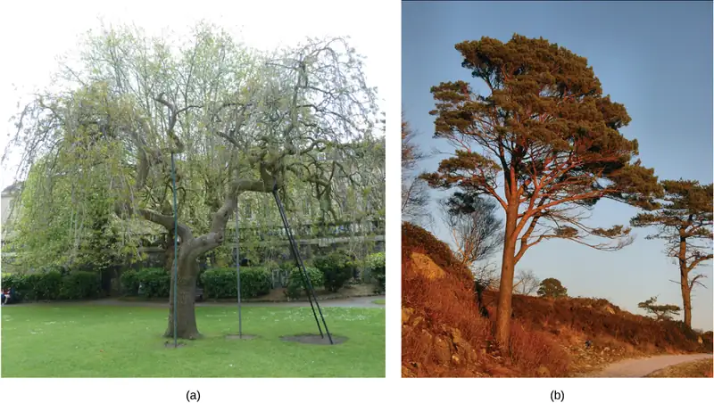
Interactive
View an animation of the double fertilization process of angiosperms. angiosperms
32.2 Pollination and Fertilization¶
Learning Objectives
By the end of this section, you will be able to do the following:
- Describe what must occur for plant fertilization
- Explain cross-pollination and the ways in which it takes place
- Describe the process that leads to the development of a seed
- Define double fertilization
In angiosperms, pollination is defined as the placement or transfer of pollen from the anther to the stigma of the same flower or another flower. In gymnosperms, pollination involves pollen transfer from the male cone to the female cone. Upon transfer, the pollen germinates to form the pollen tube and the sperm for fertilizing the egg. Pollination has been well studied since the time of Gregor Mendel. Mendel successfully carried out self- as well as cross-pollination in garden peas while studying how characteristics were passed on from one generation to the next. Today’s crops are a result of plant breeding, which employs artificial selection to produce the present-day cultivars. A case in point is today's corn, which is a result of years of breeding that started with its ancestor, teosinte. The teosinte that the ancient Mayans originally began cultivating had tiny seeds—vastly different from today’s relatively giant ears of corn. Interestingly, though these two plants appear to be entirely different, the genetic difference between them is miniscule.
Pollination takes two forms: self-pollination and cross-pollination. Self-pollination occurs when the pollen from the anther is deposited on the stigma of the same flower, or another flower on the same plant. Cross-pollination is the transfer of pollen from the anther of one flower to the stigma of another flower on a different individual of the same species. Self-pollination occurs in flowers where the stamen and carpel mature at the same time, and are positioned so that the pollen can land on the flower’s stigma. This method of pollination does not require an investment from the plant to provide nectar and pollen as food for pollinators.
Interactive
Explore this interactive website to review self-pollination and cross-pollination.
Living species are designed to ensure survival of their progeny; those that fail become extinct. Genetic diversity is therefore required so that in changing environmental or stress conditions, some of the progeny can survive. Self-pollination leads to the production of plants with less genetic diversity, since genetic material from the same plant is used to form gametes, and eventually, the zygote. In contrast, cross-pollination—or out-crossing—leads to greater genetic diversity because the microgametophyte and megagametophyte are derived from different plants.
Because cross-pollination allows for more genetic diversity, plants have developed many ways to avoid self-pollination. In some species, the pollen and the ovary mature at different times. These flowers make self-pollination nearly impossible. By the time pollen matures and has been shed, the stigma of this flower is mature and can only be pollinated by pollen from another flower. Some flowers have developed physical features that prevent self-pollination. The primrose is one such flower. Primroses have evolved two flower types with differences in anther and stigma length: the pin-eyed flower has anthers positioned at the pollen tube’s halfway point, and the thrum-eyed flower’s stigma is likewise located at the halfway point. Insects easily cross-pollinate while seeking the nectar at the bottom of the pollen tube. This phenomenon is also known as heterostyly. Many plants, such as cucumber, have male and female flowers located on different parts of the plant, thus making self-pollination difficult. In yet other species, the male and female flowers are borne on different plants (dioecious). All of these are barriers to self-pollination; therefore, the plants depend on pollinators to transfer pollen. The majority of pollinators are biotic agents such as insects (like bees, flies, and butterflies), bats, birds, and other animals. Other plant species are pollinated by abiotic agents, such as wind and water.
Everyday Connection: Incompatibility Genes in Flowers
In recent decades, incompatibility genes—which prevent pollen from germinating or growing into the stigma of a flower—have been discovered in many angiosperm species. If plants do not have compatible genes, the pollen tube stops growing. Self-incompatibility is controlled by the S (sterility) locus. Pollen tubes have to grow through the tissue of the stigma and style before they can enter the ovule. The carpel is selective in the type of pollen it allows to grow inside. The interaction is primarily between the pollen and the stigma epidermal cells. In some plants, like cabbage, the pollen is rejected at the surface of the stigma, and the unwanted pollen does not germinate. In other plants, pollen tube germination is arrested after growing one-third the length of the style, leading to pollen tube death. Pollen tube death is due either to apoptosis (programmed cell death) or to degradation of pollen tube RNA. The degradation results from the activity of a ribonuclease encoded by the S locus. The ribonuclease is secreted from the cells of the style in the extracellular matrix, which lies alongside the growing pollen tube.
In summary, self-incompatibility is a mechanism that prevents self-fertilization in many flowering plant species. The working of this self-incompatibility mechanism has important consequences for plant breeders because it inhibits the production of inbred and hybrid plants.
Pollination by Insects¶
Bees are perhaps the most important pollinator of many garden plants and most commercial fruit trees (Figure 32.12). The most common species of bees are bumblebees and honeybees. Since bees cannot see the color red, bee-pollinated flowers usually have shades of blue, yellow, or other colors. Bees collect energy-rich pollen or nectar for their survival and energy needs. They visit flowers that are open during the day, are brightly colored, have a strong aroma or scent, and have a tubular shape, typically with the presence of a nectar guide. A nectar guide includes regions on the flower petals that are visible only to bees, and not to humans; it helps to guide bees to the center of the flower, thus making the pollination process more efficient. The pollen sticks to the bees’ fuzzy hair, and when the bee visits another flower, some of the pollen is transferred to the second flower. Recently, there have been many reports about the declining population of honeybees. Many flowers will remain unpollinated and not bear seed if honeybees disappear. The impact on commercial fruit growers could be devastating.
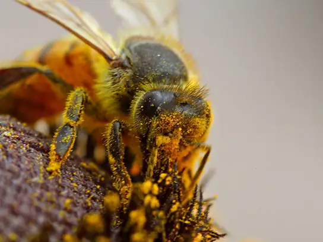
Many flies are attracted to flowers that have a decaying smell or an odor of rotting flesh. These flowers, which produce nectar, usually have dull colors, such as brown or purple. They are found on the corpse flower or voodoo lily (Amorphophallus), dragon arum (Dracunculus), and carrion flower (Stapleia, Rafflesia). The nectar provides energy, whereas the pollen provides protein. Wasps are also important insect pollinators, and pollinate many species of figs.
Butterflies, such as the monarch, pollinate many garden flowers and wildflowers, which usually occur in clusters. These flowers are brightly colored, have a strong fragrance, are open during the day, and have nectar guides to make access to nectar easier. The pollen is picked up and carried on the butterfly’s limbs. Moths, on the other hand, pollinate flowers during the late afternoon and night. The flowers pollinated by moths are pale or white and are flat, enabling the moths to land. One well-studied example of a moth-pollinated plant is the yucca plant, which is pollinated by the yucca moth. The shape of the flower and moth have adapted in such a way as to allow successful pollination. The moth deposits pollen on the sticky stigma for fertilization to occur later. The female moth also deposits eggs into the ovary. As the eggs develop into larvae, they obtain food from the flower and developing seeds. Thus, both the insect and flower benefit from each other in this symbiotic relationship. The corn earworm moth and Gaura plant have a similar relationship (Figure 32.13).
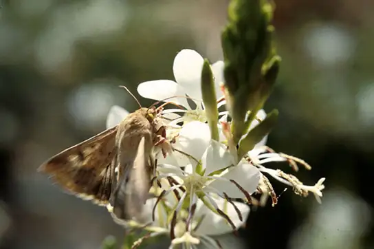
Pollination by Bats¶
In the tropics and deserts, bats are often the pollinators of nocturnal flowers such as agave, guava, and morning glory. The flowers are usually large and white or pale-colored; thus, they can be distinguished from the dark surroundings at night. The flowers have a strong, fruity, or musky fragrance and produce large amounts of nectar. They are naturally large and wide-mouthed to accommodate the head of the bat. As the bats seek the nectar, their faces and heads become covered with pollen, which is then transferred to the next flower.
Pollination by Birds¶
Many species of small birds, such as the hummingbird (Figure 32.14) and sun birds, are pollinators for plants such as orchids and other wildflowers. Flowers visited by birds are usually sturdy and are oriented in such a way as to allow the birds to stay near the flower without getting their wings entangled in the nearby flowers. The flower typically has a curved, tubular shape, which allows access for the bird’s beak. Brightly colored, odorless flowers that are open during the day are pollinated by birds. As a bird seeks energy-rich nectar, pollen is deposited on the bird’s head and neck and is then transferred to the next flower it visits. Botanists have been known to determine the range of extinct plants by collecting and identifying pollen from 200-year-old bird specimens from the same site.
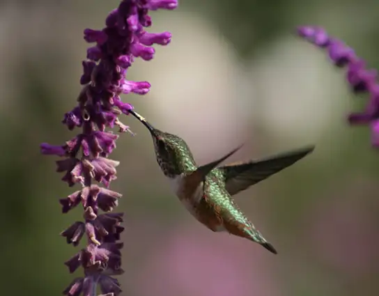
Pollination by Wind¶
Most species of conifers, and many angiosperms, such as grasses, maples and oaks, are pollinated by wind. Pine cones are brown and unscented, while the flowers of wind-pollinated angiosperm species are usually green, small, may have small or no petals, and produce large amounts of pollen. Unlike the typical insect-pollinated flowers, flowers adapted to pollination by wind do not produce nectar or scent. In wind-pollinated species, the microsporangia hang out of the flower, and, as the wind blows, the lightweight pollen is carried with it (Figure 32.15). The flowers usually emerge early in the spring, before the leaves, so that the leaves do not block the movement of the wind. The pollen is deposited on the exposed feathery stigma of the flower (Figure 32.16).
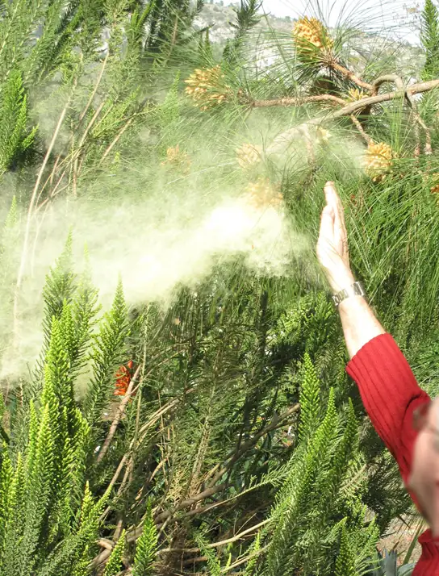
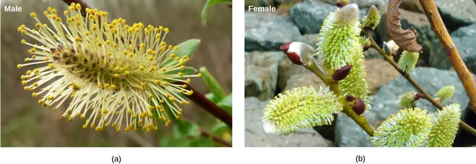
Pollination by Water¶
Some weeds, such as Australian sea grass and pond weeds, are pollinated by water. The pollen floats on water, and when it comes into contact with the flower, it is deposited inside the flower.
Evolution Connection: Pollination by Deception
Orchids are highly valued flowers, with many rare varieties (Figure 32.17). They grow in a range of specific habitats, mainly in the tropics of Asia, South America, and Central America. At least 25,000 species of orchids have been identified.
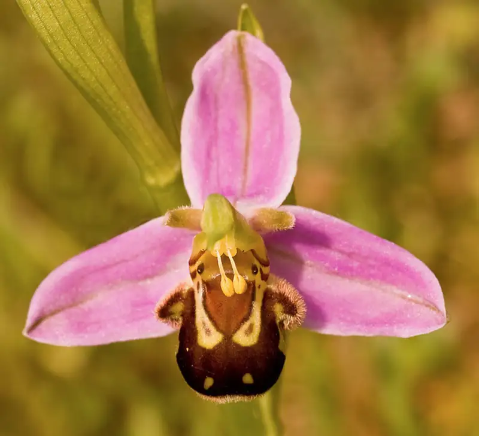
Flowers often attract pollinators with food rewards, in the form of nectar. However, some species of orchid are an exception to this standard: they have evolved different ways to attract the desired pollinators. They use a method known as food deception, in which bright colors and perfumes are offered, but no food. Anacamptis morio, commonly known as the green-winged orchid, bears bright purple flowers and emits a strong scent. The bumblebee, its main pollinator, is attracted to the flower because of the strong scent—which usually indicates food for a bee—and in the process, picks up the pollen to be transported to another flower.
Other orchids use sexual deception. Chiloglottis trapeziformis emits a compound that smells the same as the pheromone emitted by a female wasp to attract male wasps. The male wasp is attracted to the scent, lands on the orchid flower, and in the process, transfers pollen. Some orchids, like the Australian hammer orchid, use scent as well as visual trickery in yet another sexual deception strategy to attract wasps. The flower of this orchid mimics the appearance of a female wasp and emits a pheromone. The male wasp tries to mate with what appears to be a female wasp, and in the process, picks up pollen, which it then transfers to the next counterfeit mate.
Double Fertilization¶
After pollen is deposited on the stigma, it must germinate and grow through the style to reach the ovule. The microspores, or the pollen, contain two cells: the pollen tube cell and the generative cell. The pollen tube cell grows into a pollen tube through which the generative cell travels. The germination of the pollen tube requires water, oxygen, and certain chemical signals. As it travels through the style to reach the embryo sac, the pollen tube’s growth is supported by the tissues of the style. In the meantime, if the generative cell has not already split into two cells, it now divides to form two sperm cells. The pollen tube is guided by the chemicals secreted by the synergids present in the embryo sac, and it enters the ovule sac through the micropyle. Of the two sperm cells, one sperm fertilizes the egg cell, forming a diploid zygote; the other sperm fuses with the two polar nuclei, forming a triploid cell that develops into the endosperm. Together, these two fertilization events in angiosperms are known as double fertilization (Figure 32.18). After fertilization is complete, no other sperm can enter. The fertilized ovule forms the seed, whereas the tissues of the ovary become the fruit, usually enveloping the seed.
![Illustration shows the gynoecium of a flowering plant. A pollen grain adheres to the stigma. The pollen contains two cells: a generative cell and a tube cell. The pollen tube cell grows into the style. The generative cell travels inside the pollen tube. It divides to form two sperm. The pollen tube penetrates an opening in the ovule called a micropyle. One of the sperm fertilizes the egg to form the zygote. The other sperm fertilizes two polar nuclei to form a triploid endosperm, which becomes a food source for the growing embryo.](img/figure-32-02-07.webp)
After fertilization, the zygote divides to form two cells: the upper cell, or terminal cell, and the lower, or basal, cell. The division of the basal cell gives rise to the suspensor, which eventually makes connection with the maternal tissue. The suspensor provides a route for nutrition to be transported from the mother plant to the growing embryo. The terminal cell also divides, giving rise to a globular-shaped proembryo (Figure 32.19a). In dicots (eudicots), the developing embryo has a heart shape, due to the presence of the two rudimentary cotyledons (Figure 32.19b). In non-endospermic dicots, such as Capsella bursa, the endosperm develops initially, but is then digested, and the food reserves are moved into the two cotyledons. As the embryo and cotyledons enlarge, they run out of room inside the developing seed, and are forced to bend (Figure 32.19c). Ultimately, the embryo and cotyledons fill the seed (Figure 32.19d), and the seed is ready for dispersal. Embryonic development is suspended after some time, and growth is resumed only when the seed germinates. The developing seedling will rely on the food reserves stored in the cotyledons until the first set of leaves begin photosynthesis.
![Micrograph A shows a seed in the initial stage of development. The proembryo grows inside an oval-shaped ovary with an opening at the bottom. The basal cell is at the bottom ovary, and suspensor cells are above it. The globular proembryo grows at the top of the suspensor. Micrograph B shows the second stage of development, in which the embryo grows into a heart-shape. Each bump in the heart is a cotyledon. Micrograph C shows the third stage of development. The embryo has grown longer and wider, and the cotyledons have grown into long extensions resembling bunny ears bent so they fit inside the seed. Cells inside the embryo grow in vertical columns. The central column, between the two ears, is called the embryonic axis. Micrograph D shows the fourth stage of development. The bunny ears are now as large as the main part of the embryo, and completely folded over. The base of the embryo is the root meristem, and the space between the two ears is the shoot meristem. A seed coat has formed over the ovary.](img/figure-32-02-08abcd-a.webp)
Development of the Seed¶
The mature ovule develops into the seed. A typical seed contains a seed coat, cotyledons, endosperm, and a single embryo (Figure 32.20).
Visual Connection
![Illustration shows the structure of a monocot corn seed and a dicot bean seed. The lower half of the monocot seed contains the cotyledon, and the upper half contains the endosperm. The dicot seed does not contain an endosperm, but has two cotyledons, one on each side of the bean. Both the monocot and the dicot seed have an epicotyl that is attached to a hypocotyl. The hypocotyl terminates in a radicle. In the dicot, the epicotyl is in the upper middle part of the seed. In the monocot, the epicotyl is in the lower cotyledon. Both the monocot and dicot seed are surrounded by a seed coat.](img/figure-32-02-09.webp)
What of the following statements is true?
- Both monocots and dicots have an endosperm.
- The radicle develops into the root.
- The plumule is part of the epicotyl.
- The endosperm is part of the embryo.
The storage of food reserves in angiosperm seeds differs between monocots and dicots. In monocots, such as corn and wheat, the single cotyledon is called a scutellum; the scutellum is connected directly to the embryo via vascular tissue (xylem and phloem). Food reserves are stored in the large endosperm. Upon germination, enzymes are secreted by the aleurone, a single layer of cells just inside the seed coat that surrounds the endosperm and embryo. The enzymes degrade the stored carbohydrates, proteins and lipids, the products of which are absorbed by the scutellum and transported via a vasculature strand to the developing embryo. Therefore, the scutellum can be seen to be an absorptive organ, not a storage organ.
The two cotyledons in the dicot seed also have vascular connections to the embryo. In endospermic dicots, the food reserves are stored in the endosperm. During germination, the two cotyledons therefore act as absorptive organs to take up the enzymatically released food reserves, much like in monocots (monocots, by definition, also have endospermic seeds). Tobacco (Nicotiana tabaccum), tomato (Solanum lycopersicum), and pepper (Capsicum annuum) are examples of endospermic dicots. In non-endospermic dicots, the triploid endosperm develops normally following double fertilization, but the endosperm food reserves are quickly remobilized and moved into the developing cotyledon for storage. The two halves of a peanut seed (Arachis hypogaea) and the split peas (Pisum sativum) of split pea soup are individual cotyledons loaded with food reserves.
The seed, along with the ovule, is protected by a seed coat that is formed from the integuments of the ovule sac. In dicots, the seed coat is further divided into an outer coat known as the testa and inner coat known as the tegmen.
The embryonic axis consists of three parts: the plumule, the radicle, and the hypocotyl. The portion of the embryo between the cotyledon attachment point and the radicle is known as the hypocotyl (hypocotyl means “below the cotyledons”). The embryonic axis terminates in a radicle (the embryonic root), which is the region from which the root will develop. In dicots, the hypocotyls extend above ground, giving rise to the stem of the plant. In monocots, the hypocotyl does not show above ground because monocots do not exhibit stem elongation. The part of the embryonic axis that projects above the cotyledons is known as the epicotyl. The plumule is composed of the epicotyl, young leaves, and the shoot apical meristem.
Upon germination in dicot seeds, the epicotyl is shaped like a hook with the plumule pointing downwards. This shape is called the plumule hook, and it persists as long as germination proceeds in the dark. Therefore, as the epicotyl pushes through the tough and abrasive soil, the plumule is protected from damage. Upon exposure to light, the hypocotyl hook straightens out, the young foliage leaves face the sun and expand, and the epicotyl continues to elongate. During this time, the radicle is also growing and producing the primary root. As it grows downward to form the tap root, lateral roots branch off to all sides, producing the typical dicot tap root system.
In monocot seeds (Figure 32.21), the testa and tegmen of the seed coat are fused. As the seed germinates, the primary root emerges, protected by the root-tip covering: the coleorhiza. Next, the primary shoot emerges, protected by the coleoptile: the covering of the shoot tip. Upon exposure to light (i.e., when the plumule has exited the soil and the protective coleoptile is no longer needed), elongation of the coleoptile ceases and the leaves expand and unfold. At the other end of the embryonic axis, the primary root soon dies, while other, adventitious roots (roots that do not arise from the usual place – i.e., the root) emerge from the base of the stem. This gives the monocot a fibrous root system.
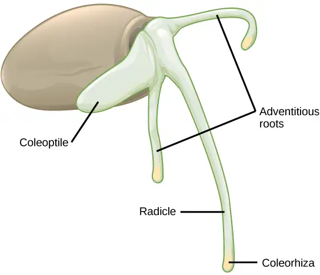
Seed Germination¶
Many mature seeds enter a period of inactivity, or extremely low metabolic activity: a process known as dormancy, which may last for months, years, or even centuries. Dormancy helps keep seeds viable during unfavorable conditions. Upon a return to favorable conditions, seed germination takes place. Favorable conditions could be as diverse as moisture, light, cold, fire, or chemical treatments. After heavy rains, many new seedlings emerge. Forest fires also lead to the emergence of new seedlings. Some seeds require vernalization (cold treatment) before they can germinate. This guarantees that seeds produced by plants in temperate climates will not germinate until the spring. Plants growing in hot climates may have seeds that need a heat treatment in order to germinate, to avoid germination in the hot, dry summers. In many seeds, the presence of a thick seed coat retards the ability to germinate. Scarification, which includes mechanical or chemical processes to soften the seed coat, is often employed before germination. Presoaking in hot water, or passing through an acid environment, such as an animal’s digestive tract, may also be employed.
Depending on seed size, the time taken for a seedling to emerge may vary. Species with large seeds have enough food reserves to germinate deep below ground, and still extend their epicotyl all the way to the soil surface. Seeds of small-seeded species usually require light as a germination cue. This ensures the seeds only germinate at or near the soil surface (where the light is greatest). If they were to germinate too far underneath the surface, the developing seedling would not have enough food reserves to reach the sunlight.
Development of Fruit and Fruit Types¶
After fertilization, the ovary of the flower usually develops into the fruit. Fruits are usually associated with having a sweet taste; however, not all fruits are sweet. Botanically, the term “fruit” is used for a ripened ovary. In most cases, flowers in which fertilization has taken place will develop into fruits, and flowers in which fertilization has not taken place will not. Some fruits develop from the ovary and are known as true fruits, whereas others develop from other parts of the female gametophyte and are known as accessory fruits. The fruit encloses the seeds and the developing embryo, thereby providing it with protection. Fruits are of many types, depending on their origin and texture. The sweet tissue of the blackberry, the red flesh of the tomato, the shell of the peanut, and the hull of corn (the tough, thin part that gets stuck in your teeth when you eat popcorn) are all fruits. As the fruit matures, the seeds also mature.
Fruits may be classified as simple, aggregate, multiple, or accessory, depending on their origin (Figure 32.22). If the fruit develops from a single carpel or fused carpels of a single ovary, it is known as a simple fruit, as seen in nuts and beans. An aggregate fruit is one that develops from more than one carpel, but all are in the same flower: the mature carpels fuse together to form the entire fruit, as seen in the raspberry. Multiple fruit develops from an inflorescence or a cluster of flowers. An example is the pineapple, where the flowers fuse together to form the fruit. Accessory fruits (sometimes called false fruits) are not derived from the ovary, but from another part of the flower, such as the receptacle (strawberry) or the hypanthium (apples and pears). In general, the accessory fruit is a combination of the ovary and several floral components.
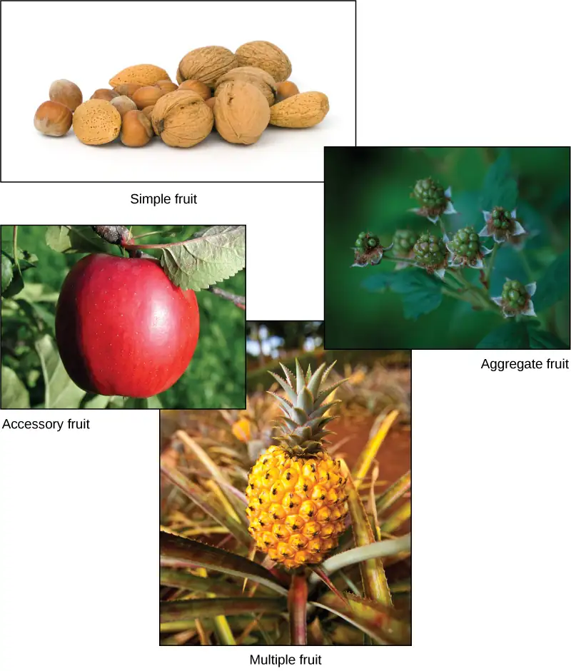
Fruits generally have three parts: the exocarp (the outermost skin or covering), the mesocarp (middle part of the fruit), and the endocarp (the inner part of the fruit). Together, all three are known as the pericarp. The mesocarp is usually the fleshy, edible part of the fruit; however, in some fruits, such as the almond, the endocarp is the edible part. In many fruits, two or all three of the layers are fused, and are indistinguishable at maturity. Fruits can be dry or fleshy. Furthermore, fruits can be divided into dehiscent or indehiscent types. Dehiscent fruits, such as peas, readily release their seeds, while indehiscent fruits, like peaches, rely on decay to release their seeds.
Fruit and Seed Dispersal¶
The fruit has a single purpose: seed dispersal. Seeds contained within fruits need to be dispersed far from the mother plant, so they may find favorable and less competitive conditions in which to germinate and grow.
Some fruit have built-in mechanisms so they can disperse by themselves, whereas others require the help of agents like wind, water, and animals (Figure 32.23). Modifications in seed structure, composition, and size help in dispersal. Wind-dispersed fruit are lightweight and may have wing-like appendages that allow them to be carried by the wind. Some have a parachute-like structure to keep them afloat. Some fruits—for example, the dandelion—have hairy, weightless structures that are suited to dispersal by wind.
Seeds dispersed by water are contained in light and buoyant fruit, giving them the ability to float. Coconuts are well known for their ability to float on water to reach land where they can germinate. Similarly, willow and silver birches produce lightweight fruit that can float on water.
Animals and birds eat fruits, and the seeds that are not digested are excreted in their droppings some distance away. Some animals, like squirrels, bury seed-containing fruits for later use; if the squirrel does not find its stash of fruit, and if conditions are favorable, the seeds germinate. Some fruits, like the cocklebur, have hooks or sticky structures that stick to an animal's coat and are then transported to another place. Humans also play a big role in dispersing seeds when they carry fruits to new places and throw away the inedible part that contains the seeds.
All of the above mechanisms allow for seeds to be dispersed through space, much like an animal’s offspring can move to a new location. Seed dormancy, which was described earlier, allows plants to disperse their progeny through time: something animals cannot do. Dormant seeds can wait months, years, or even decades for the proper conditions for germination and propagation of the species.
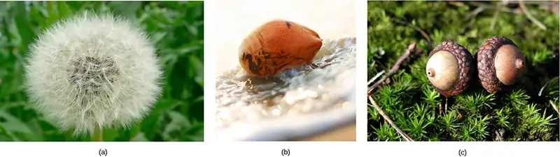
32.3 Asexual Reproduction¶
Learning Objectives
By the end of this section, you will be able to do the following:
- Compare the mechanisms and methods of natural and artificial asexual reproduction
- Describe the advantages and disadvantages of natural and artificial asexual reproduction
- Discuss plant life spans
Many plants are able to propagate themselves using asexual reproduction. This method does not require the investment required to produce a flower, attract pollinators, or find a means of seed dispersal. Asexual reproduction produces plants that are genetically identical to the parent plant because no mixing of male and female gametes takes place. Traditionally, these plants survive well under stable environmental conditions when compared with plants produced from sexual reproduction because they carry genes identical to those of their parents.
Many different types of roots exhibit asexual reproduction (Figure 32.24). The corm is used by gladiolus and garlic. Bulbs, such as a scaly bulb in lilies and a tunicate bulb in daffodils, are other common examples. A potato is a stem tuber, while parsnip propagates from a taproot. Ginger and iris produce rhizomes, while ivy uses an adventitious root (a root arising from a plant part other than the main or primary root), and the strawberry plant has a stolon, which is also called a runner.
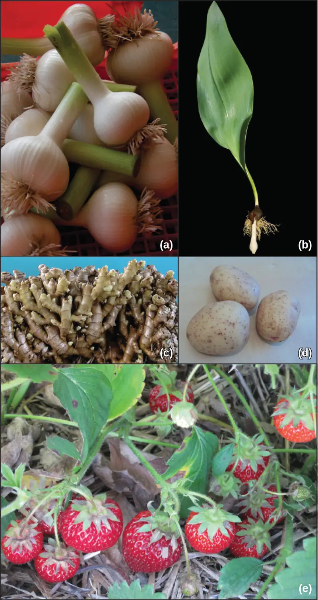
Some plants can produce seeds without fertilization. Either the ovule or part of the ovary, which is diploid in nature, gives rise to a new seed. This method of reproduction is known as apomixis.
An advantage of asexual reproduction is that the resulting plant will reach maturity faster. Since the new plant is arising from an adult plant or plant parts, it will also be sturdier than a seedling. Asexual reproduction can take place by natural or artificial (assisted by humans) means.
Natural Methods of Asexual Reproduction¶
Natural methods of asexual reproduction include strategies that plants have developed to self-propagate. Many plants—like ginger, onion, gladioli, and dahlia—continue to grow from buds that are present on the surface of the stem. In some plants, such as the sweet potato, adventitious roots or runners can give rise to new plants (Figure 32.25). In Bryophyllum and kalanchoe, the leaves have small buds on their margins. When these are detached from the plant, they grow into independent plants; or, they may start growing into independent plants if the leaf touches the soil. Some plants can be propagated through cuttings alone.
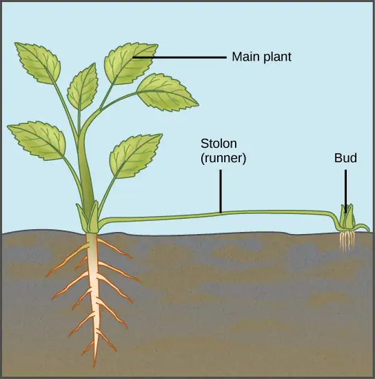
Artificial Methods of Asexual Reproduction¶
These methods are frequently employed to give rise to new, and sometimes novel, plants. They include grafting, cutting, layering, and micropropagation.
Grafting¶
Grafting has long been used to produce novel varieties of roses, citrus species, and other plants. In grafting, two plant species are used; part of the stem of the desirable plant is grafted onto a rooted plant called the stock. The part that is grafted or attached is called the scion. Both are cut at an oblique angle (any angle other than a right angle), placed in close contact with each other, and are then held together (Figure 32.26). Matching up these two surfaces as closely as possible is extremely important because these will be holding the plant together. The vascular systems of the two plants grow and fuse, forming a graft. After a period of time, the scion starts producing shoots, and eventually starts bearing flowers and fruits. Grafting is widely used in viticulture (grape growing) and the citrus industry. Scions capable of producing a particular fruit variety are grafted onto root stock with specific resistance to disease.
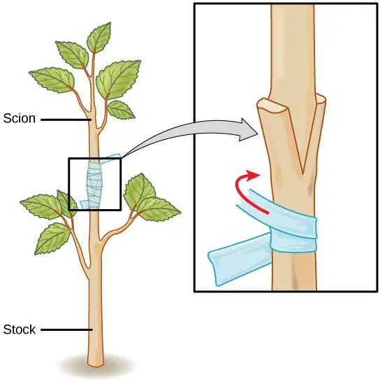
Cutting¶
Plants such as coleus and money plant are propagated through stem cuttings, where a portion of the stem containing nodes and internodes is placed in moist soil and allowed to root. In some species, stems can start producing a root even when placed only in water. For example, leaves of the African violet will root if kept in water undisturbed for several weeks.
Layering¶
Layering is a method in which a stem attached to the plant is bent and covered with soil. Young stems that can be bent easily without any injury are preferred. Jasmine and bougainvillea (paper flower) can be propagated this way (Figure 32.27). In some plants, a modified form of layering known as air layering is employed. A portion of the bark or outermost covering of the stem is removed and covered with moss, which is then taped. Some gardeners also apply rooting hormone. After some time, roots will appear, and this portion of the plant can be removed and transplanted into a separate pot.
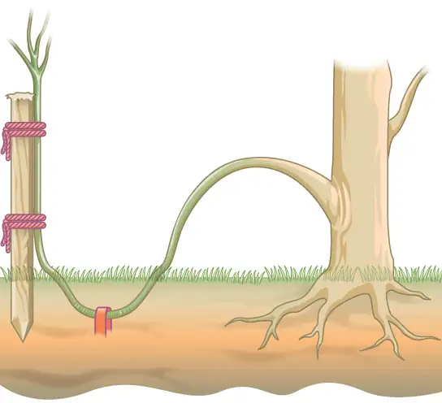
Micropropagation¶
Micropropagation (also called plant tissue culture) is a method of propagating a large number of plants from a single plant in a short time under laboratory conditions (Figure 32.28). This method allows propagation of rare, endangered species that may be difficult to grow under natural conditions, are economically important, or are in demand as disease-free plants.
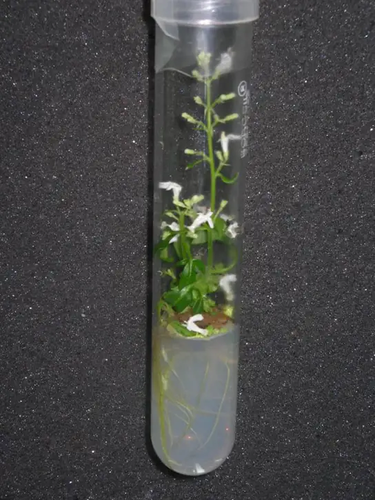
To start plant tissue culture, a part of the plant such as a stem, leaf, embryo, anther, or seed can be used. The plant material is thoroughly sterilized using a combination of chemical treatments standardized for that species. Under sterile conditions, the plant material is placed on a plant tissue culture medium that contains all the minerals, vitamins, and hormones required by the plant. The plant part often gives rise to an undifferentiated mass known as callus, from which individual plantlets begin to grow after a period of time. These can be separated and are first grown under greenhouse conditions before they are moved to field conditions.
Plant Life Spans¶
The length of time from the beginning of development to the death of a plant is called its life span. The life cycle, on the other hand, is the sequence of stages a plant goes through from seed germination to seed production of the mature plant. Some plants, such as annuals, only need a few weeks to grow, produce seeds and die. Other plants, such as the bristlecone pine, live for thousands of years. Some bristlecone pines have a documented age of 4,500 years (Figure 32.29). Even as some parts of a plant, such as regions containing meristematic tissue—the area of active plant growth consisting of undifferentiated cells capable of cell division—continue to grow, some parts undergo programmed cell death (apoptosis). The cork found on stems, and the water-conducting tissue of the xylem, for example, are composed of dead cells.
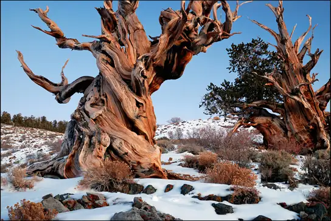
Plant species that complete their lifecycle in one season are known as annuals, an example of which is Arabidopsis, or mouse-ear cress. Biennials such as carrots complete their lifecycle in two seasons. In a biennial’s first season, the plant has a vegetative phase, whereas in the next season, it completes its reproductive phase. Commercial growers harvest the carrot roots after the first year of growth, and do not allow the plants to flower. Perennials, such as the magnolia, complete their lifecycle in two years or more.
In another classification based on flowering frequency, monocarpic plants flower only once in their lifetime; examples include bamboo and yucca. During the vegetative period of their life cycle (which may be as long as 120 years in some bamboo species), these plants may reproduce asexually and accumulate a great deal of food material that will be required during their once-in-a-lifetime flowering and setting of seed after fertilization. Soon after flowering, these plants die. Polycarpic plants form flowers many times during their lifetime. Fruit trees, such as apple and orange trees, are polycarpic; they flower every year. Other polycarpic species, such as perennials, flower several times during their life span, but not each year. By this means, the plant does not require all its nutrients to be channelled towards flowering each year.
As is the case with all living organisms, genetics and environmental conditions have a role to play in determining how long a plant will live. Susceptibility to disease, changing environmental conditions, drought, cold, and competition for nutrients are some of the factors that determine the survival of a plant. Plants continue to grow, despite the presence of dead tissue such as cork. Individual parts of plants, such as flowers and leaves, have different rates of survival. In many trees, the older leaves turn yellow and eventually fall from the tree. Leaf fall is triggered by factors such as a decrease in photosynthetic efficiency, due to shading by upper leaves, or oxidative damage incurred as a result of photosynthetic reactions. The components of the part to be shed are recycled by the plant for use in other processes, such as development of seed and storage. This process is known as nutrient recycling.
The aging of a plant and all the associated processes is known as senescence, which is marked by several complex biochemical changes. One of the characteristics of senescence is the breakdown of chloroplasts, which is characterized by the yellowing of leaves. The chloroplasts contain components of photosynthetic machinery such as membranes and proteins. Chloroplasts also contain DNA. The proteins, lipids, and nucleic acids are broken down by specific enzymes into smaller molecules and salvaged by the plant to support the growth of other plant tissues.
The complex pathways of nutrient recycling within a plant are not well understood. Hormones are known to play a role in senescence. Applications of cytokinins and ethylene delay or prevent senescence; in contrast, abscissic acid causes premature onset of senescence.
Chapter Review¶
Key Terms¶
- accessory fruit
- fruit derived from tissues other than the ovary
- aggregate fruit
- fruit that develops from multiple carpels in the same flower
- aleurone
- single layer of cells just inside the seed coat that secretes enzymes upon germination
- androecium
- sum of all the stamens in a flower
- antipodals
- the three cells away from the micropyle
- apomixis
- process by which seeds are produced without fertilization of sperm and egg
- coleoptile
- covering of the shoot tip, found in germinating monocot seeds
- coleorhiza
- covering of the root tip, found in germinating monocot seeds
- cotyledon
- fleshy part of seed that provides nutrition to the seed
- cross-pollination
- transfer of pollen from the anther of one flower to the stigma of a different flower
- cutting
- method of asexual reproduction where a portion of the stem contains nodes and internodes is placed in moist soil and allowed to root
- dormancy
- period of no growth and very slow metabolic processes
- double fertilization
- two fertilization events in angiosperms; one sperm fuses with the egg, forming the zygote, whereas the other sperm fuses with the polar nuclei, forming endosperm
- endocarp
- innermost part of fruit
- endosperm
- triploid structure resulting from fusion of a sperm with polar nuclei, which serves as a nutritive tissue for embryo
- endospermic dicot
- dicot that stores food reserves in the endosperm
- epicotyl
- embryonic shoot above the cotyledons
- exine
- outermost covering of pollen
- exocarp
- outermost covering of a fruit
- gametophyte
- multicellular stage of the plant that gives rise to haploid gametes or spores
- grafting
- method of asexual reproduction where the stem from one plant species is spliced to a different plant
- gravitropism
- response of a plant growth in the same direction as gravity
- gynoecium
- the sum of all the carpels in a flower
- hypocotyl
- embryonic axis above the cotyledons
- intine
- inner lining of the pollen
- layering
- method of propagating plants by bending a stem under the soil
- megagametogenesis
- second phase of female gametophyte development, during which the surviving haploid megaspore undergoes mitosis to produce an eight-nucleate, seven-cell female gametophyte, also known as the megagametophyte or embryo sac.
- megasporangium
- tissue found in the ovary that gives rise to the female gamete or egg
- megasporogenesis
- first phase of female gametophyte development, during which a single cell in the diploid megasporangium undergoes meiosis to produce four megaspores, only one of which survives
- megasporophyll
- bract (a type of modified leaf) on the central axis of a female gametophyte
- mesocarp
- middle part of a fruit
- micropropagation
- propagation of desirable plants from a plant part; carried out in a laboratory
- micropyle
- opening on the ovule sac through which the pollen tube can gain entry
- microsporangium
- tissue that gives rise to the microspores or the pollen grain
- microsporophyll
- central axis of a male cone on which bracts (a type of modified leaf) are attached
- monocarpic
- plants that flower once in their lifetime
- multiple fruit
- fruit that develops from multiple flowers on an inflorescence
- nectar guide
- pigment pattern on a flower that guides an insect to the nectaries
- non-endospermic dicot
- dicot that stores food reserves in the developing cotyledon
- perianth
- (also, petal or sepal) part of the flower consisting of the calyx and/or corolla; forms the outer envelope of the flower
- pericarp
- collective term describing the exocarp, mesocarp, and endocarp; the structure that encloses the seed and is a part of the fruit
- plumule
- shoot that develops from the germinating seed
- polar nuclei
- found in the ovule sac; fusion with one sperm cell forms the endosperm
- pollination
- transfer of pollen to the stigma
- polycarpic
- plants that flower several times in their lifetime
- radicle
- original root that develops from the germinating seed
- scarification
- mechanical or chemical processes to soften the seed coat
- scion
- the part of a plant that is grafted onto the root stock of another plant
- scutellum
- type of cotyledon found in monocots, as in grass seeds
- self-pollination
- transfer of pollen from the anther to the stigma of the same flower
- senescence
- process that describes aging in plant tissues
- simple fruit
- fruit that develops from a single carpel or fused carpels
- sporophyte
- multicellular diploid stage in plants that is formed after the fusion of male and female gametes
- suspensor
- part of the growing embryo that makes connection with the maternal tissues
- synergid
- type of cell found in the ovule sac that secretes chemicals to guide the pollen tube towards the egg
- tegmen
- inner layer of the seed coat
- testa
- outer layer of the seed coat
- vernalization
- exposure to cold required by some seeds before they can germinate
Summary¶
32.1 Reproductive Development and Structure¶
The flower contains the reproductive structures of a plant. All complete flowers contain four whorls: the calyx, corolla, androecium, and gynoecium. The stamens are made up of anthers, in which pollen grains are produced, and a supportive strand called the filament. The pollen contains two cells— a generative cell and a tube cell—and is covered by two layers called the intine and the exine. The carpels, which are the female reproductive structures, consist of the stigma, style, and ovary. The female gametophyte is formed from mitotic divisions of the megaspore, forming an eight-nuclei ovule sac. This is covered by a layer known as the integument. The integument contains an opening called the micropyle, through which the pollen tube enters the embryo sac.
The diploid sporophyte of angiosperms and gymnosperms is the conspicuous and long-lived stage of the life cycle. The sporophytes differentiate specialized reproductive structures called sporangia, which are dedicated to the production of spores. The microsporangium contains microspore mother cells, which divide by meiosis to produce haploid microspores. The microspores develop into male gametophytes that are released as pollen. The megasporangium contains megaspore mother cells, which divide by meiosis to produce haploid megaspores. A megaspore develops into a female gametophyte containing a haploid egg. A new diploid sporophyte is formed when a male gamete from a pollen grain enters the ovule sac and fertilizes this egg.
32.2 Pollination and Fertilization¶
For fertilization to occur in angiosperms, pollen has to be transferred to the stigma of a flower: a process known as pollination. Gymnosperm pollination involves the transfer of pollen from a male cone to a female cone. When the pollen of the flower is transferred to the stigma of the same or another flower on the same plant, it is called self-pollination. Cross-pollination occurs when pollen is transferred from one flower to another flower of another plant. Cross-pollination requires pollinating agents such as water, wind, or animals, and increases genetic diversity. After the pollen lands on the stigma, the tube cell gives rise to the pollen tube, through which the generative nucleus migrates. The pollen tube gains entry through the micropyle on the ovule sac. The generative cell divides to form two sperm cells: one fuses with the egg to form the diploid zygote, and the other fuses with the polar nuclei to form the endosperm, which is triploid in nature. This is known as double fertilization. After fertilization, the zygote divides to form the embryo and the fertilized ovule forms the seed. The walls of the ovary form the fruit in which the seeds develop. The seed, when mature, will germinate under favorable conditions and give rise to the diploid sporophyte.
32.3 Asexual Reproduction¶
Many plants reproduce asexually as well as sexually. In asexual reproduction, part of the parent plant is used to generate a new plant. Grafting, layering, and micropropagation are some methods used for artificial asexual reproduction. The new plant is genetically identical to the parent plant from which the stock has been taken. Asexually reproducing plants thrive well in stable environments.
Plants have different life spans, dependent on species, genotype, and environmental conditions. Parts of the plant, such as regions containing meristematic tissue, continue to grow, while other parts experience programmed cell death. Leaves that are no longer photosynthetically active are shed from the plant as part of senescence, and the nutrients from these leaves are recycled by the plant. Other factors, including the presence of hormones, are known to play a role in delaying senescence.
Visual Connection Questions¶
32.1 Reproductive Development and Structure¶
1. Figure 32.3 If the anther is missing, what type of reproductive structure will the flower be unable to produce? What term is used to describe an incomplete flower lacking the androecium? What term describes an incomplete flower lacking a gynoecium?
Answer
Figure 32.3 Pollen (or sperm); carpellate; staminate.
2. Figure 32.8 An embryo sac is missing the synergids. What specific impact would you expect this to have on fertilization?
- The pollen tube will be unable to form.
- The pollen tube will form but will not be guided toward the egg.
- Fertilization will not occur because the synergid is the egg.
- Fertilization will occur but the embryo will not be able to grow.
Answer
Figure 32.8 B: The pollen tube will form but will not be guided toward the egg.
32.2 Pollination and Fertilization¶
3. Figure 32.20 What is the function of the cotyledon?
- It develops into the root.
- It provides nutrition for the embryo.
- It forms the embryo.
- It protects the embryo.
Answer
Review Questions¶
32.1 Reproductive Development and Structure¶
4. In a plant’s male reproductive organs, development of pollen takes place in a structure known as the ________.
- stamen
- microsporangium
- anther
- tapetum
Answer
B
5. The stamen consists of a long stalk called the filament that supports the ________.
- stigma
- sepal
- style
- anther
Answer
D
6. The ________ are collectively called the calyx.
- sepals
- petals
- tepals
- stamens
Answer
A
7. The pollen lands on which part of the flower?
- stigma
- style
- ovule
- integument
Answer
A
32.2 Pollination and Fertilization¶
8. After double fertilization, a zygote and ________ form.
- an ovule
- endosperm
- a cotyledon
- a suspensor
Answer
B
9. The fertilized ovule gives rise to the ________.
- fruit
- seed
- endosperm
- embryo
Answer
B
10. What is the term for a fruit that develops from tissues other than the ovary?
- simple fruit
- aggregate fruit
- multiple fruit
- accessory fruit
Answer
D
11. The ________ is the outermost covering of a fruit.
- endocarp
- pericarp
- exocarp
- mesocarp
Answer
C
32.3 Asexual Reproduction¶
12. ________ is a useful method of asexual reproduction for propagating hard-to-root plants.
- grafting
- layering
- cuttings
- budding
Answer
A
13. Which of the following is an advantage of asexual reproduction?
- Cuttings taken from an adult plant show increased resistance to diseases.
- Grafted plants can more successfully endure drought.
- When cuttings or buds are taken from an adult plant or plant parts, the resulting plant will grow into an adult faster than a seedling.
- Asexual reproduction takes advantage of a more diverse gene pool.
Answer
C
14. Plants that flower once in their lifetime are known as ________.
- monoecious
- dioecious
- polycarpic
- monocarpic
Answer
D
15. Plant species that complete their lifecycle in one season are known as ________.
- biennials
- perennials
- annuals
- polycarpic
Answer
C
Critical Thinking Questions¶
32.1 Reproductive Development and Structure¶
16. Describe the reproductive organs inside a flower.
Answer
Inside the flower are the reproductive organs of the plant. The stamen is the male reproductive organ. Pollen is produced in the stamen. The carpel is the female reproductive organ. The ovary is the swollen base of the carpel where ovules are found. Not all flowers have every one of the four parts.
17. Describe the two-stage lifecycle of plants: the gametophyte stage and the sporophyte stage.
Answer
Plants have two distinct phases in their lifecycle: the gametophyte stage and the sporophyte stage. In the gametophyte stage, when reproductive cells undergo meiosis and produce haploid cells called spores, the gametophyte stage begins. Spores divide by cell division to form plant structures of an entirely new plant. The cells in these structures or plants are haploid. Some of these cells undergo cell division and form sex cells. Fertilization, the joining of haploid sex cells, begins the sporophyte stage. Cells formed in this stage have the diploid number of chromosomes. Meiosis in some of these cells forms spores, and the cycle begins again: a process known as alternation of generations.
18. Describe the four main parts, or whorls, of a flower.
Answer
A typical flower has four main parts, or whorls: the calyx, corolla, androecium, and gynoecium. The outermost whorl of the flower has green, leafy structures known as sepals, which are collectively called the calyx. It helps to protect the unopened bud. The second whorl is made up of brightly colored petals that are known collectively as the corolla. The third whorl is the male reproductive structure known as the androecium. The androecium has stamens, which have anthers on a stalk or filament. Pollen grains are borne on the anthers. The gynoecium is the female reproductive structure. The carpel is the individual structure of the gynoecium and has a stigma, the stalk or style, and the ovary.
19. Discuss the differences between a complete flower and an incomplete flower.
Answer
If all four whorls of a flower are present, it is a complete flower. If any of the four parts is missing, it is known as incomplete. Flowers that contain both an androecium and gynoecium are called androgynous or hermaphrodites. Those that contain only an androecium are known as staminate flowers, and those that have only carpels are known as carpellate. If both male and female flowers are borne on the same plant, it is called monoecious, while plants with male and female flowers on separate plants are termed dioecious.
32.2 Pollination and Fertilization¶
20. Why do some seeds undergo a period of dormancy, and how do they break dormancy?
Answer
Many seeds enter a period of inactivity or extremely low metabolic activity, a process known as dormancy. Dormancy allows seeds to tide over unfavorable conditions and germinate on return to favorable conditions. Favorable conditions could be as diverse as moisture, light, cold, fire, or chemical treatments. After heavy rains, many new seedlings emerge. Forest fires also lead to the emergence of new seedlings.
21. Discuss some ways in which fruit seeds are dispersed.
Answer
Some fruits have built-in mechanisms that allow them to disperse seeds by themselves, but others require the assistance of agents like wind, water, and animals. Fruit that are dispersed by the wind are light in weight and often have wing-like appendages that allow them to be carried by the wind; other have structures resembling a parachute that keep them afloat in the wind. Some fruits, such as those of dandelions, have hairy, weightless structures that allow them to float in the wind. Fruits dispersed by water are light and buoyant, giving them the ability to float; coconuts are one example. Animals and birds eat fruits and disperse their seeds by leaving droppings at distant locations. Other animals bury fruit that may later germinate. Some fruits stick to animals’ bodies and are carried to new locations. People also contribute to seed dispersal when they carry fruits to new places.
32.3 Asexual Reproduction¶
22. What are some advantages of asexual reproduction in plants?
Answer
Asexual reproduction does not require the expenditure of the plant’s resources and energy that would be involved in producing a flower, attracting pollinators, or dispersing seeds. Asexual reproduction results in plants that are genetically identical to the parent plant, since there is no mixing of male and female gametes, resulting in better survival. The cuttings or buds taken from an adult plant produce progeny that mature faster and are sturdier than a seedling grown from a seed.
23. Describe natural and artificial methods of asexual reproduction in plants.
Answer
Asexual reproduction in plants can take place by natural methods or artificial methods. Natural methods include strategies used by the plant to propagate itself. Artificial methods include grafting, cutting, layering, and micropropagation.
24. Discuss the life cycles of various plants.
Answer
Plant species that complete their life cycle in one season are known as annuals. Biennials complete their life cycle in two seasons. In the first season, the plant has a vegetative phase, whereas in the next season, it completes its reproductive phase. Perennials, such as the magnolia, complete their life cycle in two years or more.
25. How are plants classified on the basis of flowering frequency?
Answer
Monocarpic plants flower only once during their lifetime. During the vegetative period of their lifecycle, these plants accumulate a great deal of food material that will be required during their once-in-a-lifetime flowering and setting of seed after fertilization. Soon after flowering, these plants die. Polycarpic plants flower several times during their life span; therefore, not all nutrients are channelled towards flowering.
Adapted from Biology 2e by OpenStax, licensed under CC BY 4.0. Access the original for free at openstax.org. Changes: converted to the web reading format of The Open Book Project.